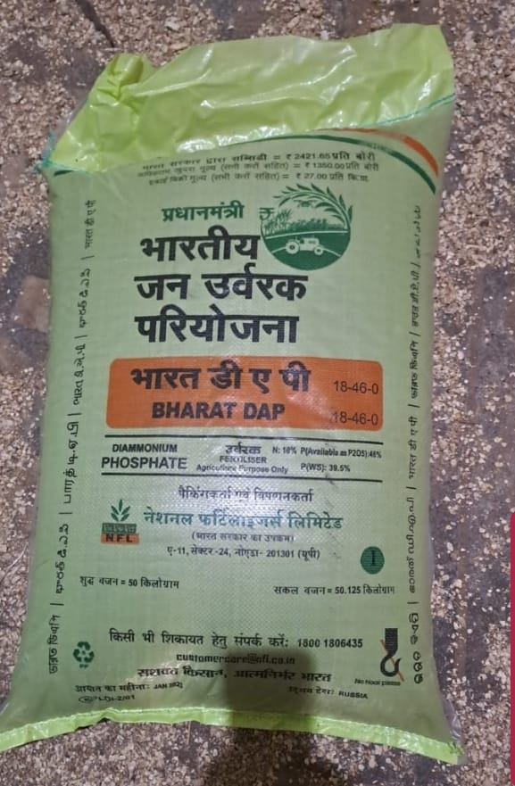
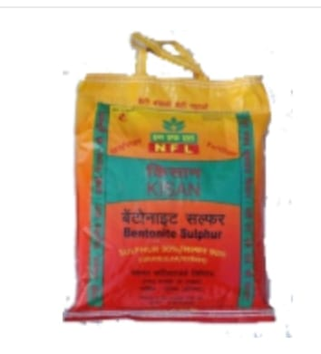
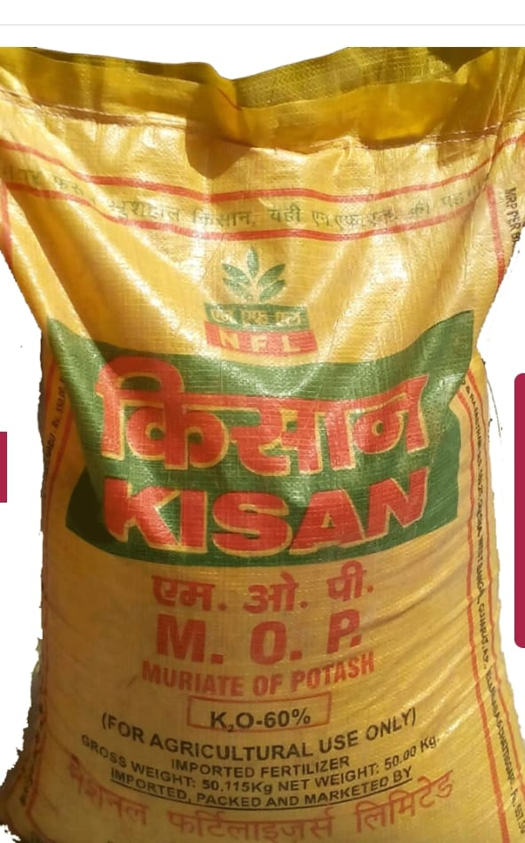
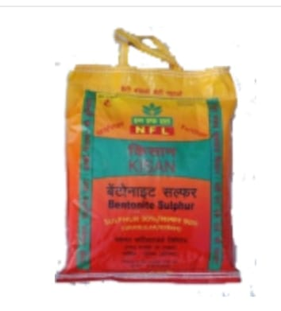
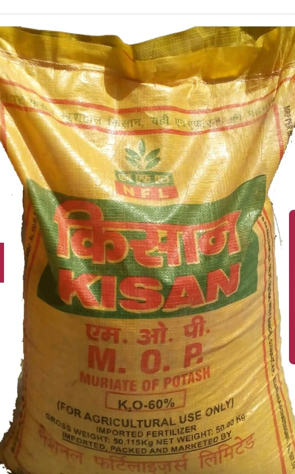

FERTILIZERS:





Agronomical trial on Paddy and Wheat crops with Neem coated Urea as source of Nitrogen has produced
significantly higher yield at research and farm level. Looking into the potential of Neem Coated
Urea
and its acceptance by the farmers, Ministry of Agriculture in July 2004, included the Neem Coated
Urea
in FCO. The use of Neem Coated Urea has been found to improve the uptake of N, P and K
significantly.
Since 2008 the, Ministry of Chemicals and Fertilizers allowed Neem Coated Urea manufacturer to sell
NCU
at 5% above the MRP, to recover the cost of coating, however cost of Neem kernel Oil and production
as
such of Neem Coated Urea has increased significantly. As per recent notification dated 25.05.2015
all
the urea producers in country shall now be producing 100% urea as NCC in order to improve crop
productivity and reduce the subsidy. Balanced use Nitrogen, Phosphorous, Potassium along with the
requirements of secondary and micronutrient increase the yield at economic level. Of the three major
Nutrients Nitrogen, Phosphorous and Potash, nitrogen has received the maximum attention because of
many
reasons. Nitrogen gets easily converted to available forms from various types of fertilizers that
are
being applied....Read
more
Bentonite Sulphur is straight Sulphatic fertilizer containing Sulphur and Bentonite clay. The Sulphur present is 90% in these fertilizers and is the highest among other category of Sulphated fertilizers. This makes Bentonite Sulphur more effective in terms of supplying Sulphur to Crops. In fertilizers, besides N, P, K nutrients, Sulphur is the 4th major plant nutrient. Sulphur is an essential component in the synthesis of amino acids required to manufacture Proteins. Sulphur is also required for production of chlorophyll and utilization of phosphorus and other essential nutrients.
Advantages of using Bentonite Sulphur (BS) for different crops 1. Increases soil acidity or lower soil pH for alkaline soils
2. Increases nitrogen utilization, phosphate and micronutrient uptake
3. Resist leaching until converted to sulphate form
4. Growth rate of roots improves ensuring that, the plant extracts maximum amount of nutrients from the soil
5. Increases Oil content of groundnuts and other oil seeds, improves quality and quantity of pulses.
...Read more
Kisan DAP (Di Ammonium PhosphKisan DAP is a complex fertiliser containing two major plant nutrients – Nitrogen(18%) and Phosphorus(46%). Kisan DAP contains 18% Nitrogen and 46% phosphorus. Kisan DAP can be safely mixed and used with other fertilizers. It is the only complex fertiliser having highest total nutrients (64%). Nitrogen and Phosphorous are available in 1: 2.5 ratio. Almost entire (15.5%) Nitrogen is almost available in Ammonical form which avoids leaching losses and readily availability of Nitrogen to the plants. Most of the phosphorus nutrient is also in water soluble form (41.6%) and hence available to plants immediately after application. Kisan DAP can be used in all cereals, sugarcane, fodder crops, vegetables and fruits. The NP ratio of 1:2.5 is a scientific combination for basal application to all crops and both the nutrients are chemically combined and interaction is synergistic. [the urea producers in country shall now be producing 100% urea as NCC in order to improve crop productivity and reduce the subsidy. Balanced use Nitrogen, Phosphorous, Potassium along with the requirements of secondary and micronutrient increase the yield at economic level. Of the three major Nutrients Nitrogen, Phosphorous and Potash, nitrogen has received the maximum attention because of many reasons. Nitrogen gets easily converted to available forms from various types of fertilizers that are being applied]....Read more
This multifaceted bio-fertilizer solublizes the fixed phosphorus in the soil and makes it available to the crops. Bacteria multiply very fast in the soil and this helps to improve the texture and structure of the soil. This also helps to enhance the growth of the crops and also induces resistance against various pests and diseases.
Important features/characteristics of Biola are -
1. Biola facilitates easy and early seed germination.
2. The bacteria from Biola releases organic acids in the soil which helps to decrease the pH of the soil and also helps to dissolve the fixed Phosphorous and make it available to the crops.
3. Biola initiates early and easy root development and also increases the efficiency of the roots.
4. Biola application improves the soil status and thus increases crop yield.
5. Biola application also helps to save money required for buying expensive Phosphatic fertilizers. RCF shall be introducing Azatobactor and Rhizobium culture Bio Fertilizers in near future.
...Read more
Bentonite Sulphur is straight Sulphatic fertilizer containing Sulphur and Bentonite clay. The Sulphur present is 90% in these fertilizers and is the highest among other category of Sulphated fertilizers. This makes Bentonite Sulphur more effective in terms of supplying Sulphur to Crops. In fertilizers, besides N, P, K nutrients, Sulphur is the 4th major plant nutrient. Sulphur is an essential component in the synthesis of amino acids required to manufacture Proteins. Sulphur is also required for production of chlorophyll and utilization of phosphorus and other essential nutrients.
Advantages of using Bentonite Sulphur (BS) for different crops 1. Increases soil acidity or lower soil pH for alkaline soils
2. Increases nitrogen utilization, phosphate and micronutrient uptake
3. Resist leaching until converted to sulphate form
4. Growth rate of roots improves ensuring that, the plant extracts maximum amount of nutrients from the soil
5. Increases Oil content of groundnuts and other oil seeds, improves quality and quantity of pulses.
...Read more
Kisan DAP (Di Ammonium PhosphKisan DAP is a complex fertiliser containing two major plant nutrients – Nitrogen(18%) and Phosphorus(46%). Kisan DAP contains 18% Nitrogen and 46% phosphorus. Kisan DAP can be safely mixed and used with other fertilizers. It is the only complex fertiliser having highest total nutrients (64%). Nitrogen and Phosphorous are available in 1: 2.5 ratio. Almost entire (15.5%) Nitrogen is almost available in Ammonical form which avoids leaching losses and readily availability of Nitrogen to the plants. Most of the phosphorus nutrient is also in water soluble form (41.6%) and hence available to plants immediately after application. Kisan DAP can be used in all cereals, sugarcane, fodder crops, vegetables and fruits. The NP ratio of 1:2.5 is a scientific combination for basal application to all crops and both the nutrients are chemically combined and interaction is synergistic. [the urea producers in country shall now be producing 100% urea as NCC in order to improve crop productivity and reduce the subsidy. Balanced use Nitrogen, Phosphorous, Potassium along with the requirements of secondary and micronutrient increase the yield at economic level. Of the three major Nutrients Nitrogen, Phosphorous and Potash, nitrogen has received the maximum attention because of many reasons. Nitrogen gets easily converted to available forms from various types of fertilizers that are being applied]....Read more
This multifaceted bio-fertilizer solublizes the fixed phosphorus in the soil and makes it available to the crops. Bacteria multiply very fast in the soil and this helps to improve the texture and structure of the soil. This also helps to enhance the growth of the crops and also induces resistance against various pests and diseases.
Important features/characteristics of Biola are -
1. Biola facilitates easy and early seed germination.
2. The bacteria from Biola releases organic acids in the soil which helps to decrease the pH of the soil and also helps to dissolve the fixed Phosphorous and make it available to the crops.
3. Biola initiates early and easy root development and also increases the efficiency of the roots.
4. Biola application improves the soil status and thus increases crop yield.
5. Biola application also helps to save money required for buying expensive Phosphatic fertilizers. RCF shall be introducing Azatobactor and Rhizobium culture Bio Fertilizers in near future.
...Read more